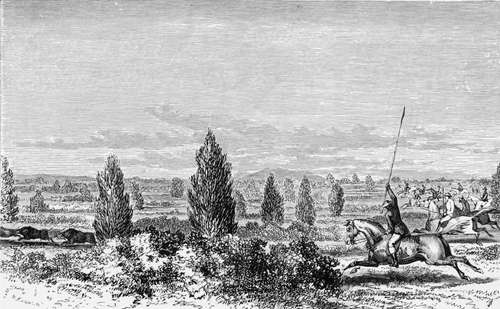

Chapter IV. Part 3
Description
This section is from the book "Hog Hunting In The East, And Other Sports", by J. T. Newall. Also available from Amazon: Hog Hunting in the East, and Other Sports.
Chapter IV. Part 3
After a very brief discussion between Norman and one or two others, this plan was agreed to ; and while the beaters were acting on it, and forming into line so as to cover a space of, perhaps, a third of a mile, Mackenzie proposed a little refreshment.
" Let us have just a mouthful of something before we start," he said. " This is a rare drouthy place, and though the wind is cold, the sun is piping hot. I have a peculiar buzzing in my head. I foolishly ate a wing of cold chicken for breakfast, and I suppose it doesn't agree with me. Here, you begarree, bring the bottle."
" I think it is the east wind," said Stewart; " it dries one up, and makes one feel muddled."
One attributed it to the mutton chops, another to a slice of Manuel's "goose's pup;" but Mowbray was bold enough to declare that he considered it attribut-able to "that last glass of punch," quite ignoring its many predecessors.
In the meantime, Mac had been carefully uncorking the bottle ; and pouring a fair allowance into the cup of his hunting-flask, tossed it down with evident relish, and handed the bottle to his neighbour.
"A hair of the dog that bit you," muttered Mowbray, as lie followed suit. " It's better cold, even, than hot, Mac."
The bottle was passed round, and was soon emptied by the half dozen among whom its contents were shared. It was so much appreciated by one or two that applications were made to Mackenzie for more ; and one went so far as to attempt an investigation of the tiffin basket.
"What are you looking for there, Hawkes?" shouted Mac, as he discovered that individual thus prying into the secrets of the commissariat department.
" Oh, nothing," was the reply, as he turned aside.
" Then, bedad ! as the Irishman said," remarked the caterer, " you'll find it in the bottle where the punch was;" and he pitched the empty bottle towards him. " But I won't have my tiffin basket examined till the proper hour."
By this time the line of beaters was fully extended; and as the horsemen rode off, each to take up his allotted position in the line, Norman counselled them to ride the pig directly they were seen, as they might break back and make direct for the mainland.
There was a good deal of mirage out on the waste, cool though the air was; and at this hour of the day, the filmy, undulating waves of refracted heat floated over the salt-engrained surface with a quivering, tremulous motion. The dim line of bushes in the horizon seemed to be dancing with a gentle, even movement; and sheets of water, where water was not, trembled on the verge. A distant spectral tree or two, stunted and almost leafless, appeared to be suspended in the air, and making abortive efforts to kick itself down again to earth. The early morning clearness and decision of outline was entirely wanting, for the ascending sun, now approaching the meridian, had brought its broad glare to bear in full effulgence on the wild landscape, and render dim, blue, and shadowy all its tints and outlines.
On the extreme right of the line was Danvers, with Mackenzie as his nearest neighbour, while to Norman had been allotted the left, and Melton was on his right hand. Natta, on a diminutive tattoo, directed the progress of the line from the centre, about which the Doctor, mounted on a riding camel, viewed the proceedings.
On that open ground, of course, each hunter was plainly in sight of the others. As it was desirable that distant pig should not be disturbed, the advance was conducted without the usual accompaniments of shouts and other noises, instrumental as well as vocal. This, to those accustomed to the "loud-throated chorus of the ordinary beat, had a peculiar, unexciting effect. The noiseless progress into the waste of so many men seemed strange and weird-like.
For some time nothing was disturbed but an oubara or two a bird of the bustard species or a few chinkara, but when half a mile had been passed over, two or three horsemen about the centre were seen by the rest to dash madly forward, creating great excitement along the whole line. They quickly, however, pulled up, as the object viewed proved to be only a hyaena or wolf.
On the runn. gone away.
When near half way to the line of bushes, one or two beaters on the extreme left gave tongue loudly, and Norman rode quickly to the shout. Seeing nothing, but having observed just before a wolf stealing away, and knowing that beaters will sometimes halloo away to anything, he pulled up, without giving a view halloo, or the usual sign of holding his spear aloft. Casting his eyes, however, far ahead, he detected at a considerable distance, a few black objects bobbing up and down among the scrub and grass— now seen, now lost. He at once recognised the well known sterns of pig, and with a hunting yell that resounded far over the waste and startled the flying game, he elongated his raised spear to the utmost extent, and launched his horse in pursuit.
It only required a pressure of the calf to intimate to the old hunter he bestrode, that the time for action had arrived. The pig, if possible, must be overtaken before they reach the distant line of bushes, or they, with so many horsemen in pursuit, might make such a commotion as to disturb those expected to be there couchant. It was a case of cramming the whole way.
The pig had a long start, and were making a good use of it, with their heads set straight for the bushes.
Norman was, of course, the nearest and directly in their rear, but one or two were not very far from him when he started, and would readily avail themselves of any change in the direction of the pigs' flight. His view halloo had set the whole string of horsemen in motion, and each now thundered along on his own line, all converging on the distant chase. The position of Norman was at present undoubtedly the best, but there was a chance for all.
Continue to: